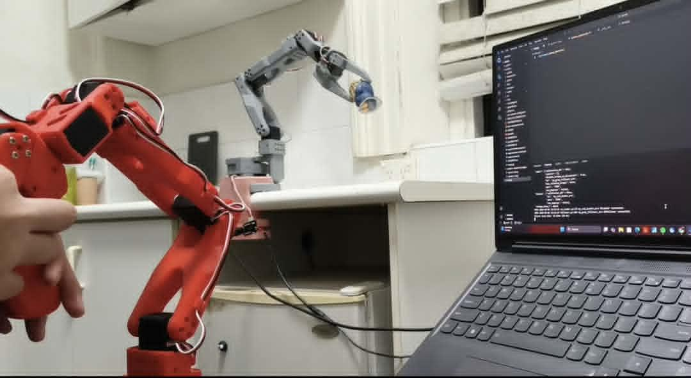

An independent project with the LeRobot framework. I assembled and calibrated a 6-DOF SO-101 robot arm, recorded demonstrations by teleoperation, and trained an imitation-learning model to pick and place.
I assembled and calibrated the 6-DOF SO-101 arm myself, building a hands-on understanding of kinematics and system calibration.
I implemented a LeRobot data pipeline: demonstrations are collected by teleoperation, and each trajectory is recorded from two independent cameras so the model sees the task from more than one view.
I trained an imitation-learning model on 50 recorded episodes to perform pick-and-place.
